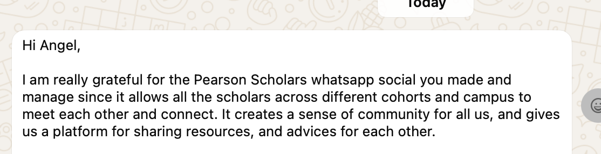
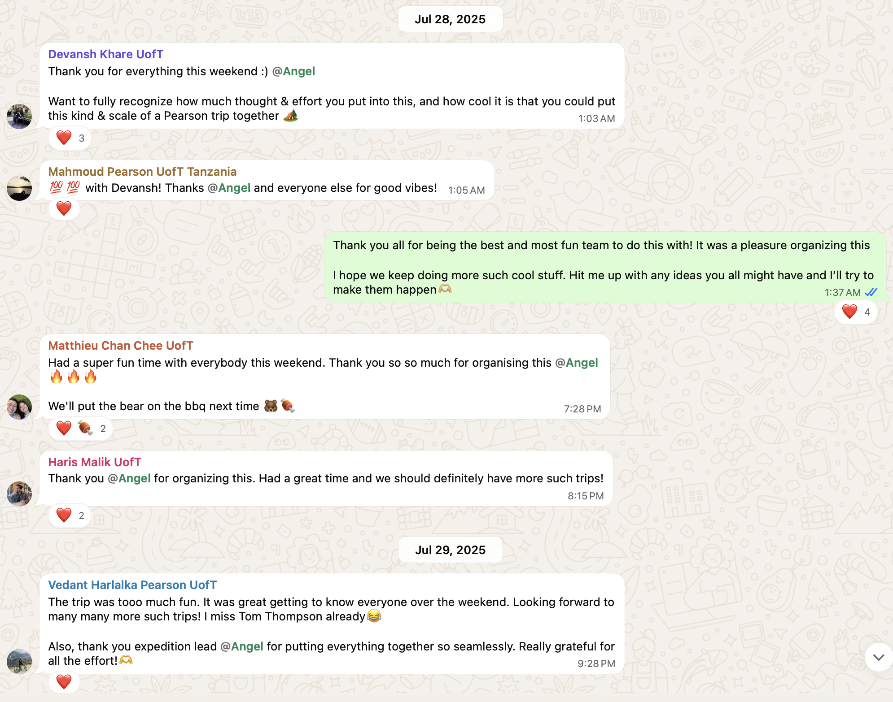
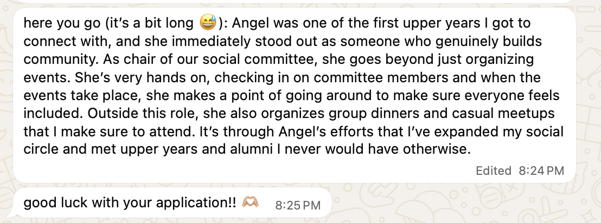
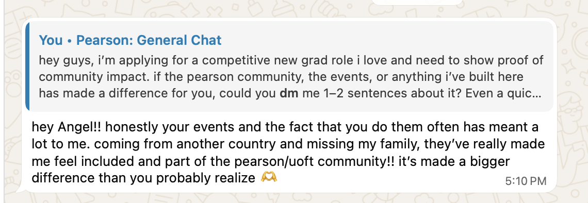
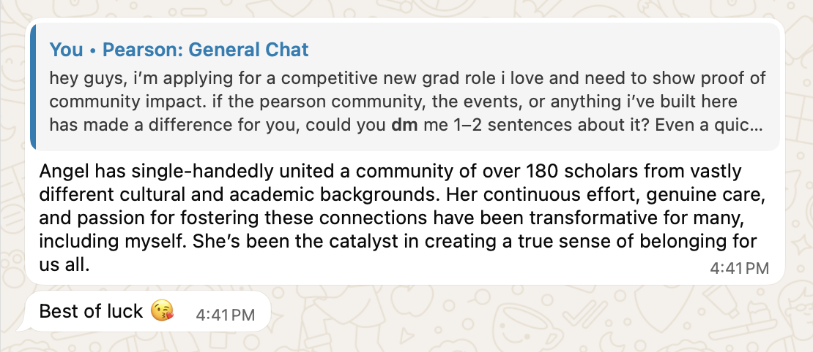
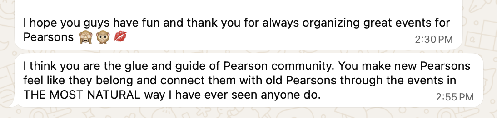
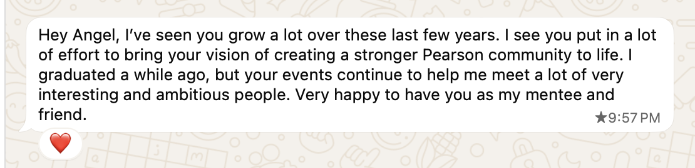
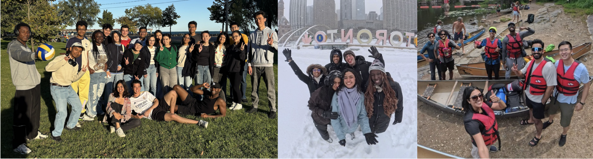
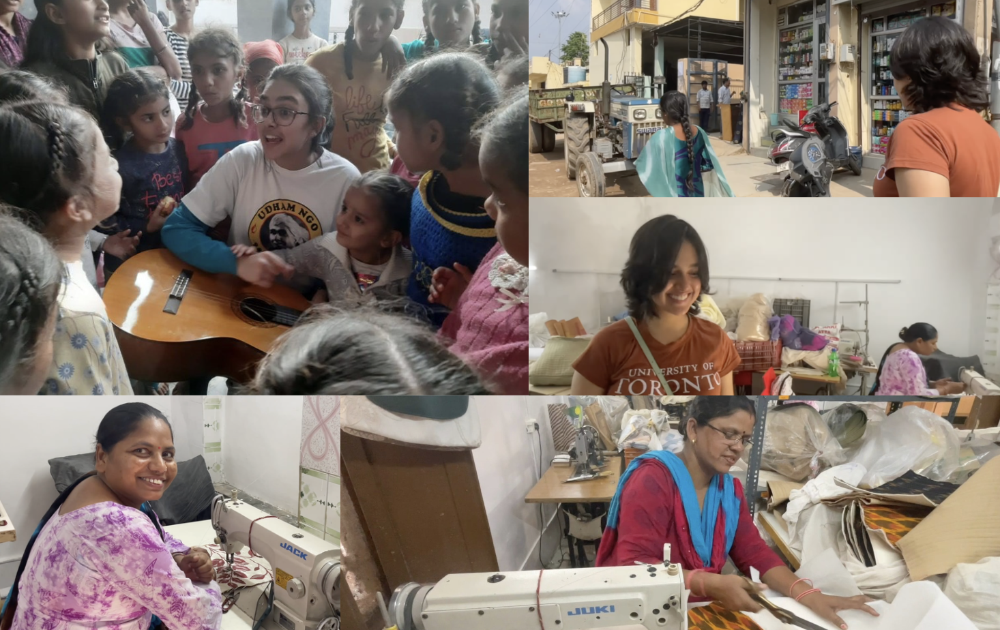

Building a Sustainable Ecosystem for 330+ International Scholars
When I looked at the Lester B. Pearson Scholarship program, I saw over 330 of the brightest and most ambitious international students in Canada from over 188 countries operating in complete silos. There was no central infrastructure. No cross-cohort connections, no communication channels, no shared social fabric. I didn't wait for the university to fix it. I took ownership of a problem that wasn't mine and architected the communication and social systems from scratch. I created the cross-cohort WhatsApp network, organized 30+ official and unofficial events in a year, and as the Social Committee Co-Chair I managed a $10K+ annual fund for community programming. Today, it is a self-sustaining ecosystem that connects scholars across every cohort, campus, and country.








Driving Systemic Equity & Executing Technical Leverage
I build systems that matter to real people, focusing on marginalized populations, equitable access, and technology that increases human leverage.
Partnered with NGOs in India to build on-the-ground pathways for female financial independence, helping women gain economic agency through artisanal work and selling handmade products, and mentoring young girls at orphanages. A mission that aligns directly with Wealthsimple's goal to help everyone achieve financial freedom.

Over a multi-year UX Research Fellowship, I spearheaded research and design for a cardiac survivorship app for sudden cardiac arrest survivors in Canada. Now the only undergraduate trainee in the Transform HF program, participating in user-centred design workshops with researchers, scientists, and patient partners, with a dedicated focus on Indigenous cultural safety in research and product design (including a 3-day intensive camp). Research published in Springer at HCI International 2024.
The AI-Native Builder
I'm curious about how technology reshapes work and actively look for tools that increase my leverage.
As a Software PM, I drove cross-functional delivery of Adrenalin AI, AMD Chat, and other AI-driven products and internal tools, coordinating across product, engineering, QA, and marketing teams. Built AI-powered automation pipelines that cut manual reporting effort by ~70%. Presented work to AMD's CEO that influenced executive roadmap decisions.
Currently building a predictive ML model and intuitive data analytics dashboard, leveraging data to drive proactive, high-stakes medical decisions at one of the world's leading children's hospitals.
Organized 6 career fairs with 6,000+ attendees each. Ideated, planned, and hosted 2 office tours and multiple professional development events. Secured 30+ corporate partnerships and drove $50K+ in revenue through business development to fund large-scale student career events.
The Global Perspective
My drive for equitable tech didn't start in a classroom.. it started on the ground in India and shaped everything I've built since.
Full Case Study →